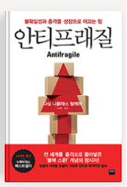

OpenAI ChatGTP3.5를 이용한 이 책의 요약은 다음과 같다.
아래는 ChatGPT 3.5에게 나심 탈레브가 쓴 책 "안티프래질"에 대해서 2000단어 정도로 내용을 요약해 달라고 하여 얻은 결과이다. 한글로 질문을 던져 요청하는 경우 제대로 된 결과를 보여주지 않으므로 영어로 질문을 던지고, 이에 나온 답변을 복사하여 구글번역을 통해 한글로 번역하였다.
안티프래질: 무질서로부터 얻는 것들』은 레바논계 미국인 학자이자 통계학자, 전직 무역업자인 나심 니콜라스 탈레브(Nassim Nicholas Taleb)가 쓴 책입니다. 2012년에 출판된 이 책은 "Fooled by Randomness", "The Black Swan"과 같은 그의 초기 작품을 확장합니다. Taleb은 "Antifragile"에서 안티프래질의 개념을 소개하고 금융, 경제, 의학, 철학을 포함한 다양한 영역에서 그 의미를 탐구합니다. 이 책에 제시된 주요 주제와 아이디어를 요약하면 다음과 같습니다.
안티프래질의 정의: Taleb은 취약성의 반대 개념으로 안티프래질이라는 개념을 소개합니다. 깨지기 쉬운 물건은 무질서나 변동성에 직면하여 깨지거나 고통받는 물건이고, 안티프래질 물건은 충격을 견딜 뿐만 아니라 충격으로부터 이익을 얻고 개선됩니다. Taleb은 불확실성과 예측 불가능성으로 특징지어지는 세계를 탐색하려면 안티프래질을 이해하는 것이 중요하다고 주장합니다.
취약성, 견고성 및 취약성 방지의 3요소: Taleb은 스트레스에 대한 반응을 기반으로 시스템을 분류하는 3요소를 설정합니다. 취약한 시스템은 변동성에 의해 부정적인 영향을 받고, 견고한 시스템은 충격에 저항하지만 반드시 충격으로부터 이익을 얻는 것은 아니며, 취약한 시스템은 혼돈과 불확실성에 노출되면서 번창하고 더욱 강력해집니다. Taleb은 현대 사회가 안티프래그성을 과소평가하고 탄력성을 희생하면서 안정성과 예측 가능성을 선호하는 경향이 있다고 주장합니다.
바벨 전략: Taleb은 의사 결정 및 위험 관리에서 안티프래질을 실제로 적용하는 바벨 전략을 소개합니다. 이 전략에는 한쪽("바벨")에서 극단적이지만 관리 가능한 위험에 자신을 노출시키는 동시에 다른 쪽을 안전하게 유지하는 것이 포함됩니다. 이 접근 방식을 통해 개인이나 조직은 긍정적인 블랙 스완 이벤트로부터 이익을 얻는 동시에 치명적인 손실로부터 보호할 수 있습니다.
게임 속 스킨: Taleb은 "게임 속 스킨"을 갖는 것의 중요성을 강조합니다. 즉, 의사 결정자는 자신의 결정 결과에 개인적인 이해관계를 가져야 함을 의미합니다. 그는 자신의 행동에 대한 결과를 직면하는 참가자로 구성된 시스템이 강력하고 취약하지 않을 가능성이 더 높다고 주장합니다. 이 원칙은 경제, 정치, 윤리 등 다양한 분야에 적용됩니다.
도메인 의존성과 린디 효과: Taleb은 도메인 의존성에 대한 아이디어를 도입하여 한 도메인에서 작동하는 것이 반드시 다른 도메인에서도 작동하지 않을 수도 있음을 시사합니다. 그는 이것을 무언가가 오래 존재할수록 미래 기대 수명이 길어진다는 린디 효과(Lindy Effect)와 대조합니다. Taleb은 이러한 개념을 사용하여 다양한 분야에 걸쳐 이론과 실제의 적용 가능성에 도전합니다.
Via Negativa: Taleb은 요소를 추가하는 것이 아니라 제거하여 상황을 개선하는 Via Negativa 접근 방식의 사용을 옹호합니다. 그는 단순성과 축소가 복잡한 개입보다 안티프래그성을 달성하는 데 더 효과적인 경우가 많다고 주장합니다. 이 원칙은 건강에서 비즈니스, 사회 시스템에 이르기까지 삶의 다양한 측면으로 확장됩니다. 현대성과 개입주의 비판: 탈레브는 복잡한 시스템을 예측하고 통제하는 능력을 과대평가하는 현대적 경향을 '서사의 오류'라고 부르며 비판합니다. 그는 과도한 개입주의와 하향식 계획에 반대하며 분산형 시스템과 혁신 자체의 취약성에 대한 전통의 지혜를 옹호합니다.
경제 및 금융의 안티프래질: Taleb은 안티프래질 개념을 경제 및 금융 시스템에 적용하여 안정성과 예측 가능성을 가정하는 모델에 대한 지배적인 의존을 비판합니다. 그는 크고 치명적인 붕괴를 방지하려면 작은 실패와 중단을 허용하는 것이 중요하다고 주장합니다.
Mediocristan 대 Extremistan: Taleb은 결과가 제한되고 예측 가능한 Mediocristan과 희귀하고 극단적인 사건이 지배하는 Extremistan을 구분합니다. 그는 많은 전통적인 모델이 Extremistan에서 널리 퍼져 있는 높은 영향과 낮은 확률의 사건을 처리하는 데 부적합하다고 주장합니다. 의인성 및 개입 실수: Taleb은 치료자로 인한 피해를 언급하면서 의인성 개념을 탐구합니다. 그는 특히 의학과 정책 분야의 개입이 의도하지 않은 부정적인 결과를 초래하는 경우가 많다고 주장합니다. Taleb은 개입의 잠재적인 부작용과 숨겨진 위험을 고려할 필요성을 강조하면서 보다 신중한 접근 방식을 권장합니다.
요약하자면, "안티프래질"은 안티프래질의 개념과 그것이 의사 결정, 위험 관리에 미치는 영향, 불확실성과 무질서로 특징지어지는 세계에서 복잡한 시스템의 역학 이해에 대한 시사점 있는 탐구입니다. Taleb의 학제간 접근 방식은 기존 통념에 도전하고 예측 불가능성에도 불구하고 성공할 수 있는 강력하고 탄력적인 시스템을 구축하기 위한 프레임워크를 제공합니다.
Microsoft의 Bing copilot을 이용한 이 책의 요약 및 그에 대한 반론은 다음과 같다.
안녕하세요 빙입니다. 나는 Nassim Nicholas Taleb의 책 Antifragile을 요약하고 이에 대한 반론을 제시하는 데 도움을 드릴 수 있습니다. 😊 이 책의 내용을 2000자로 요약하면 다음과 같습니다.
Antifragile: Things That Gain from Disorder는 전직 트레이더이자 위험 분석가인 Nassim Nicholas Taleb의 저서입니다. 그는 이전 저서인 Fooled by Randomness와 The Black Swan으로 가장 잘 알려져 있습니다. 이 책에서 탈레브는 충격, 변동성, 불확실성으로 인해 피해를 입는 것이 아니라 그로부터 이익을 얻는 시스템의 속성으로 안티프래질(antifragility)이라는 개념을 소개합니다. 그는 안티프래질은 취약성의 반대이며 스트레스 요인을 견디거나 회복할 수 있는 능력을 의미하지만 스트레스 요인으로부터 이득을 얻지는 못하는 견고성이나 탄력성과는 다르다고 주장합니다.
Taleb은 생물학, 의학, 경제, 금융, 정치, 윤리, 철학 등 다양한 영역의 사례를 사용하여 안티프래그성의 특성과 의미를 설명합니다. 그는 또한 개인, 조직, 사회로서 더욱 안티프래질해지는 방법에 대한 몇 가지 실용적인 조언을 제공합니다. 그의 주요 요점 중 일부는 다음과 같습니다.
안티프래질(Antifragility)은 스트레스 요인에 대한 비선형 반응입니다. 즉, 적은 양의 해로움이 큰 이익을 가져올 수 있는 반면, 큰 양의 해로움은 재앙을 초래할 수 있음을 의미합니다. 이는 Taleb이 다양한 시스템에 대한 무작위성과 불확실성의 영향을 분석하기 위해 광범위하게 사용하는 볼록성의 수학적 개념과 관련이 있습니다.
안티프래질은 여러 대안 중에서 선택하고 불리한 대안의 단점을 제한하면서 유리한 결과로부터 이익을 얻을 수 있는 능력인 선택성과 연결됩니다. 선택성은 안티프래그성에 필수적인 시행착오, 실험, 실수로부터의 학습을 허용합니다. 항취약성은 운동, 단식, 예방접종과 같은 낮은 수준의 스트레스나 독소에 노출될 때 생물학적 시스템이 더 강해지고 건강해지는 현상인 호메시스(hormesis)와도 관련이 있습니다.
호메시스는 약간의 스트레스가 성장과 적응에 필요하고 유익한 반면, 스트레스가 너무 많거나 적으면 해로울 수 있음을 의미합니다. 안전하고 보수적인 구성 요소와 위험하고 투기적인 구성 요소라는 두 가지 극단의 균형을 유지하면서 중간 지점을 피하는 바벨 전략을 따르면 안티프래질이 향상될 수 있습니다.
바벨 전략은 크고 긍정적인 영향을 미치는 희귀하고 예측 불가능한 사건인 긍정적인 검은 백조에 대한 보호와 노출을 모두 허용합니다. 유익할 것으로 예상되지만 비용이 숨겨져 있거나 지연될 수 있는 일을 추가하거나 수행하는 대신 해롭거나 불필요하거나 부자연스러운 것을 제거하거나 피하는 것으로 구성된 부정적인 접근 방식을 따르면 안티프래질이 향상될 수도 있습니다.
비아 네가티바(Via Negativa) 접근법은 특히 결과가 불확실하거나 알려지지 않은 경우, 돌이킬 수 없는 해를 끼칠 가능성이 있는 행동을 피해야 한다는 사전 예방 원칙에 기반을 두고 있습니다.
안티프래질은 자신의 지식을 과대평가하고 현실의 복잡성과 예측 불가능성을 과소평가하는 경향이 있는 전문가, 당국, 기관의 개입주의로 인해 방해를 받는 경우가 많습니다. 또한 시행착오와 현지 지식에서 나오는 상향식 솔루션을 허용하기보다는 취약성과 의존성을 생성하는 하향식 솔루션을 강요하는 경향이 있습니다. Taleb은 현대 의료 시스템, 금융 시스템, 교육 시스템, 정치 시스템 등 개입주의의 다양한 사례를 비판합니다.
안티프래질은 인간 지식의 한계와 삶의 무작위성과 불확실성의 역할을 이해한 고대인의 지혜에 의해 선호되는 경우가 많습니다. 그들은 또한 종교, 윤리, 금욕주의, 회의론과 같은 안티프래그성을 강화하는 관행과 경험적 방법을 개발했습니다. 탈레브는 소크라테스, 세네카, 에피쿠로스, 디오게네스 등 안티프래질 정신을 구현한 다양한 고대 인물들을 칭찬합니다. 다음은 500 단어로 된 책에 대한 반론입니다.
Antifragile: Things That Gain from Disorder는 도발적이고 독창적인 책이지만 여러 면에서 결함이 있고 일관성이 없습니다. 이에 대해 제기될 수 있는 주요 비판은 다음과 같습니다.
안티프래질의 개념은 모호하고 제대로 정의되지 않았으며 순환적이거나 동어반복적인 방식으로 사용되는 경우가 많습니다. Taleb은 안티프래질을 충격, 변동성 및 불확실성으로부터 이익을 얻는 시스템의 속성으로 정의하지만 이러한 용어를 사용하여 안티프래그성을 식별하고 측정하기도 합니다. 이는 혼란과 모호함을 야기하고 그의 주장을 테스트하거나 위조하기 어렵게 만듭니다.
안티프래질의 개념 역시 임의적이고 주관적이며 관찰자의 관점과 선호도에 따라 달라집니다. 탈레브는 종종 자신의 논제를 뒷받침하는 사례를 선택하고, 이에 반대되는 사례는 무시하거나 기각합니다. 그는 또한 특정 사건이나 행동에 이익이나 해로움을 부여할 때 종종 인과관계와 상관관계를 혼동하고, 사후성과 적절성을 혼동합니다. 안티프래질(antifragility) 개념도 마찬가지다.